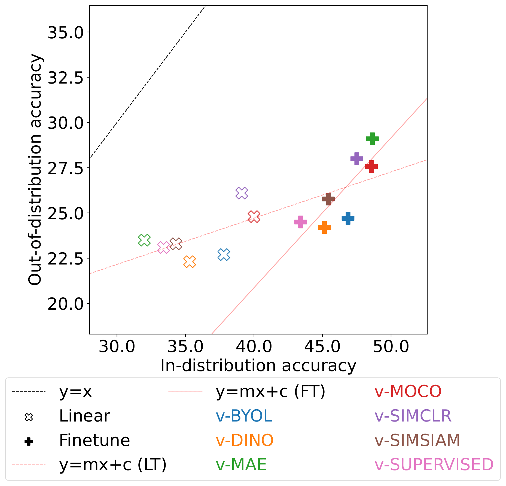
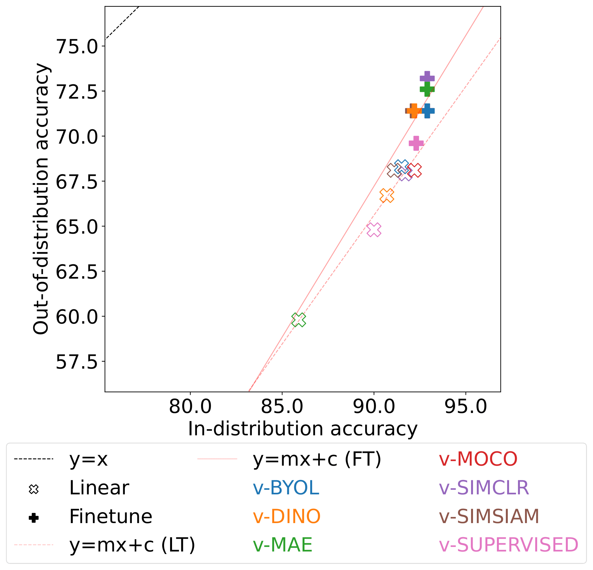
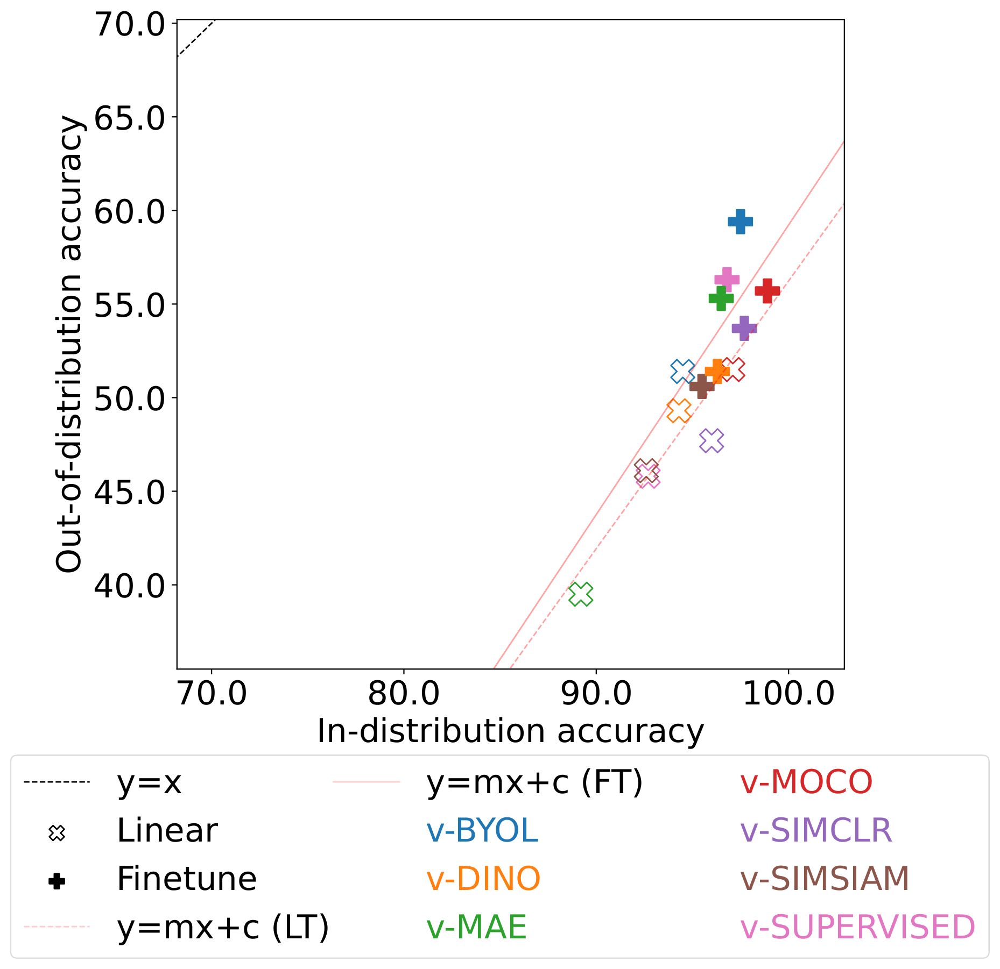

|
|
|
|
| Sample video frames of distribution shifts. In these examples, the left frames of each category represent an In-distribution sample and the right frames represent an out-of-distribution sample. |
Contributions
👉 Our study uncovers a series of intriguing behaviors and relationships of various VSSL methods, shedding light on the strengths and weaknesses that often go unnoticed in in-distribution validation. Moreover, our investigation provides a comprehensive and impartial perspective on the effectiveness of supervised vs. self-supervised pretraining. |
| Q1. How do the learned spatial and temporal representations vary based on different VSSL pretraining methodologies? How robust are these representations to different distribution shifts? |
|  | |||
| (a) Context shift (10 class). | (b) Context shift (50 class). | (c) Viewpoint shift (egocentric). | (d) Viewpoint shift (surveillance+low resolution). |
|  |  | ||
| (e) Viewpoint+actor shift (top-down+synthetic). | (f) Actor shift (animal). | (g) Source shift (UCF/HMDB). | (h) Source shift (HMDB/UCF). |
| A comparative study of the relative robustness of video models under distribution shifts, utilizing both frozen (empty markers) and finetuned (filled markers) encoders. (a and b) v-Supervised demonstrates superior performance in linear evaluation, while v-MAE achieves the best results when finetuned. On the other hand, although v-MOCO and v-SimCLR show strong performance in in-distribution validation, they exhibit weaker generalization in out-of-context scenarios. (c) The results demonstrate a linear relationship between in-distribution vs. out-of-distribution performance under egocentric viewpoint shifts. (c, d, and e) v-SimCLR and v-MOCO consistently perform better across all viewpoint shifts in both linear and finetuning. (f) In animal domain actor shift, v-BYOL achieves the best results in linear evaluation, whereas, v-SimCLR outperforms others when finetuned. (g and h) v-BYOL shows superior performance under source shifts in all setups. |
| (i) Experiment on disentangled temporal representation. | (j) Experiment on Viewpoint invariance. | (k) Experiment on robustness against low resolution inputs. |
Highlights
|
| Q2. Considering recent findings about the robustness of finetuning on the generalizability of large language models (LLMs), we pose the question: How does finetuning influence the out-of-distribution generalization and zero-shot performance of VSSL? |
| (a) Comparing performance under real-world distribution shifts. | (b) Comparing performance under synthetic temporal perturbations. |
Highlights
|
| Q3. How do VSSL methods perform on open-set problems? And what is the relationship between performance in closed-set vs. open-set recognition? |
| (a) Kinetics400/UCF (FT.) Comparing open macro-F1 scores vs. openness. |
(b) Kinetics400/HMDB (FT.) Comparing open macro-F1 scores vs. openness. |
(c) UCF101/HMDB (FT.) Comparing open macro-F1 scores vs. openness. |
(d) The relationships between closed-set and open-set (Frozen) |
Highlights
|
| Q4. Do different VSSL methods exhibit comparable decision-making patterns (`decision similarity') given the same training conditions? And how is this impacted by different distribution shifts? |
| The decision similarity between the video models in In-distribution (top) vs. out-of-distribution (bottom). |
Highlights
|